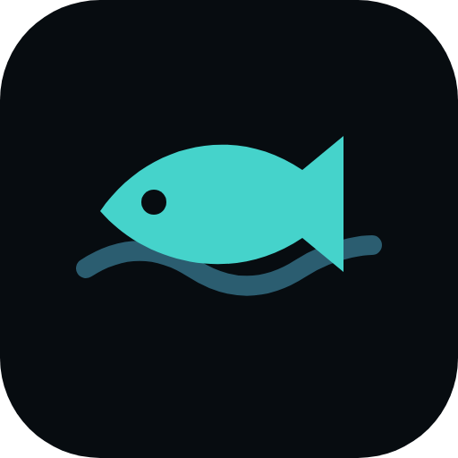

FishDock
Fish the UK coast, rivers and lakes
Opens full screen. F11 or F toggles it; Esc leaves it. Needs the internet: the places, weather and friends are live.
FishDock for Windows
Location: ask each time

Fish the UK coast, rivers and lakes
Opens full screen. F11 or F toggles it; Esc leaves it. Needs the internet: the places, weather and friends are live.